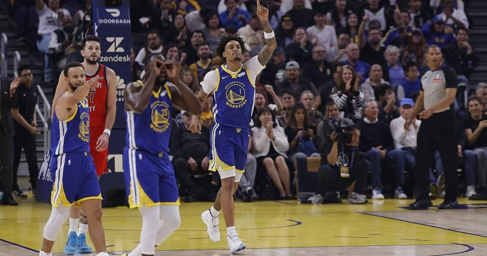

Warriors make history: first team ever to start 0-3 and win eight straight
The Warriors crushed the Pelicans 138-87 for their eighth straight win — making them the first team in NBA history to start 0-3 and then win eight in a row.

Disclosure: this post contains affiliate links. I earn a commission on qualifying purchases.
The night
The Golden State Warriors beat the New Orleans Pelicans 138-87 at Chase Center on Monday night, and the 51-point margin was only the second-most interesting number on the board. The Warriors are now 8-3, winners of eight straight, after starting the season 0-3. No team in NBA history has ever done that before.
The last team to win seven straight after an 0-3 start was the 1950-51 Boston Celtics, in Red Auerbach's first season as coach. Golden State blew past them on Monday and kept going. It was a 6-0 homestand, capped by the fourth-largest margin of victory in franchise history and the biggest since a 157-101 win at Portland in April 2023.
Stephen Curry scored 25 points in 21 minutes with four threes. Brandin Podziemski added 25 with five threes and four assists. Rookie Yaxel Lendeborg went for 23 points, 7 rebounds and 4 assists. Derik Queen led New Orleans with 16. Jordan Poole, back in the building where he won a ring, scored 7 points on 1-of-5 shooting in 33 minutes.
The context
The Pelicans were short-handed, and that's part of the story: Zion Williamson sat for rest, Trey Murphy III is out with bilateral patellar tendinopathy, and Yves Missi is out with a knee injury. New Orleans fell to 4-7. But the Warriors' turnaround isn't about one soft opponent — it's an eight-game run that started with a team that looked broken in October and now looks like it never lost the recipe.
The injuries on Golden State's side haven't gone anywhere either. The Warriors have been winning with a thin rotation, leaning on Curry and a supporting cast that keeps filling gaps. Eight straight, a 6-0 homestand, and a piece of history nobody had ever claimed. The 0-3 start is officially ancient history.
Watch
Source: New Orleans Pelicans vs Golden State Warriors Full Game Highlights | Nov 9, 2026 — NBA. The full game highlights from the Warriors' 138-87 win and eighth straight victory.
Gear up: Fanatics